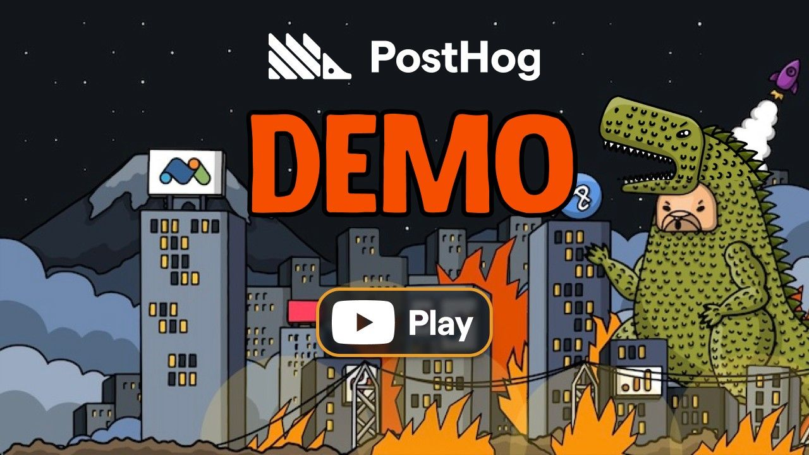

PostHog: the product-analytics Swiss Army knife developers actually like
PostHog is the open-source platform that crams product analytics, session replay, feature flags, A/B testing, surveys, error tracking, logs, and a data warehouse into one tool. Their current framing is "building self-driving products": capture enough context that agents (or humans) can diagnose problems and ship fixes proactively. The repo is at ~39k stars and was pushed literally today — commits from August 24–25, 2026 include a new llms.txt fetch endpoint for agent analytics, which tells you where they're heading.
If you've ever glued together Mixpanel + LaunchDarkly + FullStory + Sentry, PostHog's pitch is simple: stop paying four vendors and wiring four SDKs.
Why you'd actually use it
- You want to know why users churn, not just that they do. Session replay ties every recording to the same event stream as your funnels. See a funnel drop at checkout, click through to an actual session of someone rage-clicking a broken button.
- You ship features behind flags already. PostHog flags support percentage rollouts, cohort targeting, and multivariate variants — and because flags live next to analytics, you can measure a flag's impact without exporting anything.
- A/B testing without a stats degree. Experiments run on top of flags with automatic significance calculation. Ship variant B to 50% of users, watch the dashboard tell you whether conversion actually moved.
- Detecting what AI features are doing in production. With their AI observability push, teams instrumenting LLM calls get token/cost/quality signals in the same place as normal events. The new
llms.txtendpoint added this week extends that to tracking AI-agent traffic hitting your site. - Compliance-conscious teams. Self-hosting (Docker/Helm) or EU/US cloud hosting means you can keep replay data inside your own perimeter — something most SaaS-only competitors won't offer.

Getting started
- The zero-infra path: create a project at posthog.com (generous free tier — 1M events/month per their pricing docs) and grab your project API key from Settings.
- Add the JS snippet to your site:
In practice you'll use their official wizard or framework package instead of hand-pasting.<script src="https://us-assets.i.posthog.com/static/array.js"></script> // or eu-assets <script> !function(t,e){var o,n,p,r;e.__SV||(window.posthog=e,e._i=[],e.init=function(i,s,a){/* ... */},e.init("phc_YOUR_PROJECT_KEY",{api_host:"https://us.i.posthog.com"})) </script> - For React apps:
npm install posthog-js // provider.tsx import posthog from 'posthog-js' import { PostHogProvider } from 'posthog-js/react' posthog.init('phc_YOUR_KEY', { api_host: 'https://us.i.posthog.com', person_profiles: 'identified_only', // don't profile anonymous visitors }) export function PHProvider({ children }) { return <PostHogProvider client={posthog}>{children}</PostHogProvider> } - Capture events and use flags anywhere in the app:
import { useFeatureFlagEnabled, usePostHog } from 'posthog-js/react' function Checkout() { const posthog = usePostHog() const newFlow = useFeatureFlagEnabled('checkout-v2') useEffect(() => { posthog.capture('checkout_started', { cart_value: 79.99 }) }, []) return newFlow ? <NewCheckout /> : <OldCheckout /> } - Prefer self-hosting? The supported route is Docker Compose for evaluation or Kubernetes/Helm for production (per official docs):
For real workloads, their docs steer self-hosters toward Helm on Kubernetes — the monolith is heavy (ClickHouse, Kafka, Postgres, Redis).# quick eval stack git clone https://github.com/PostHog/posthog.git cd posthog docker compose -f docker-compose.dev.yml up -d
Code & config samples
Server-side flag checks in Python (posthog-node has the equivalent):
import posthog
posthog.api_key = 'phc_YOUR_KEY'
posthog.host = 'https://us.i.posthog.com'
enabled = posthog.feature_enabled(
'pricing-page-experiment',
distinct_id='user_1234',
)
if enabled:
price = 12
else:
price = 9Identifying users so replays and cohorts join up across web + server:
// after login
posthog.identify(user.id, { email: user.email, plan: user.plan })
# server-side, for backend-only actions
posthog.capture('user_1234', 'subscription_upgraded', {'plan': 'pro'})A reverse-proxy setup keeps everything first-party (no third-party cookies, better ad-blocker survival) — proxy /ingest on your domain to us.i.posthog.com and set that as api_host.
What's new
- Latest release: desktop-v0.61.11 (August 25, 2026), mostly dependency bumps — posthog-js 1.418.16, posthog-node 5.51.1, React Native plugin 2.5.0.
- New this week: a web-analytics llms.txt fetch endpoint for tracking AI-agent traffic (#88039) — if crawlers/agents hit your docs, you can now see them in analytics.
- Bugfixes worth noting: error tracking no longer loses your selection when linking an existing issue (#88130); a fixed deferred audit write stops saved requests failing (#88121); sparkline bar tooltips now cover the whole band (#88001).
- SDK releases are automated via an updater bot, so client libraries stay fresh weekly — pin versions deliberately.
Troubleshooting
- Flags always return false in production. Cause: the flag targets anonymous users but you never call
identify, ordistinct_iddiffers between web and server SDKs. Fix: call identify immediately after login and pass the same ID to server-side evaluations; check the flag's release conditions in the dashboard. - No events showing up. Cause: ad blockers/tracking protection eating the ingest requests. Fix: reverse-proxy the ingestion path through your own domain, and verify with the "recent events" debug view in settings while devtools shows network calls succeeding.
- Session recordings are blank or missing clicks. Cause: shadow DOM/iframes and canvas-heavy apps aren't fully captured by default. Fix: enable the relevant recording config options for canvas capture, and test on pages without strict CSP; also confirm your CSP allows the PostHog asset domains.
- Autocapture noise drowning real signals. Cause: autocapture records every click by design. Fix: keep autocapture for breadth but define named actions/events for what you actually chart, and set
person_profiles: 'identified_only'to avoid inflating person counts. - Self-hosted instance falls over under load. Cause: ClickHouse/Kafka resource starvation — the eval compose file is not a production topology. Fix: move to the Helm deployment with dedicated nodes for ClickHouse, and follow their capacity guidance before enabling replay at scale.